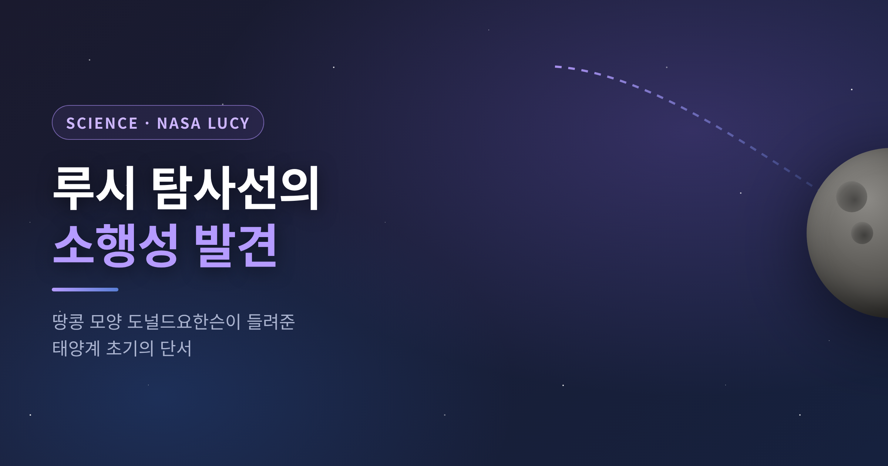
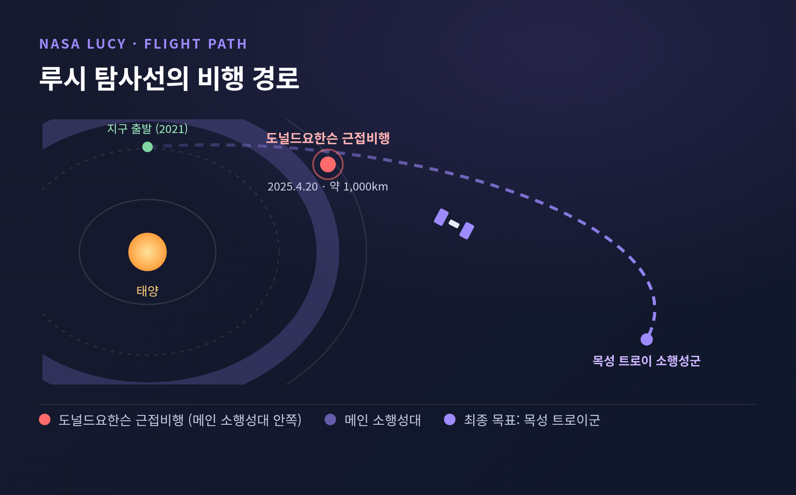
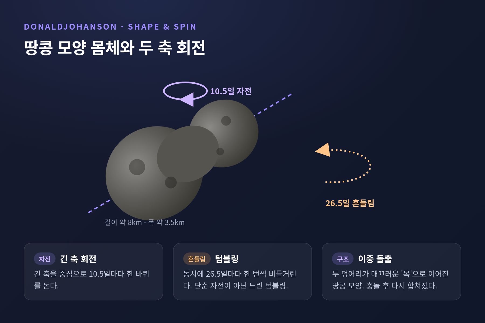

[과학] 루시 탐사선 소행성 도널드요한슨 발견 — 태양계 초기의 단서

오늘은 NASA 루시(Lucy) 탐사선이 소행성 도널드요한슨에서 찾아낸 단서를 정리해 보겠습니다. 2026년 6월 18일 학술지 Science에 분석 결과가 실렸습니다. 땅콩 모양의 몸체, 비틀거리는 자전, 그리고 잠깐 머물렀던 물의 흔적 — 짧은 글에 그 세 가지를 차분히 담아 보겠습니다.
핵심부터 먼저 말씀드립니다. 작은 소행성 하나에도 충돌과 자전 변화, 물의 흔적이 겹겹이 새겨져 있었고, 그 미세한 차이가 태양계 초기 역사를 읽는 단서가 됩니다.
2025년 4월, 루시가 지나간 자리
루시는 2025년 4월 20일 메인 소행성대 안쪽의 도널드요한슨을 근접 비행했습니다. 최근접 거리는 약 650마일, 그러니까 1,000km 정도였습니다. 속도는 시속 약 30,000마일, 약 48,000km/h에 달했습니다.
고해상도 흑백 카메라 L'LORRI는 약 58,000마일(93,000km) 거리에서 다가가며 두 시간에 걸쳐 이미지를 담았습니다. 지표면의 50m 크기 지형까지 식별되는 영상이었습니다.
이 비행은 본 임무를 위한 "예행연습" 성격으로 계획됐습니다. 장비가 제대로 작동하는지 점검하면서, 미탐사 소행성을 가까이서 들여다보는 보너스 기회까지 얻은 셈입니다.

땅콩을 닮은 몸, 비틀거리는 자전
도널드요한슨은 예상보다 큰 천체였습니다. 길이 약 8km, 가장 넓은 폭은 약 3.5km입니다.
생김새가 독특합니다. 두 개의 덩어리가 비교적 매끄러운 "목"으로 이어진 이중 돌출 구조 — 흔히 땅콩 모양으로 불립니다. 한쪽 덩어리가 다른 쪽보다 작습니다. 연구진은 충돌로 떨어져 나온 두 조각이 서로의 중력에 이끌려 부드럽게 다시 합쳐진 것으로 봅니다.
자전은 더 흥미롭습니다. 지구의 망원경으로는 약 10.5일 주기로 단순하게 도는 길쭉한 천체로 보였습니다. 그런데 루시가 가까이서 본 모습은 달랐습니다. 긴 축을 중심으로 10.5일마다 한 바퀴 돌면서, 동시에 26.5일마다 한 번씩 비틀거리고 있었습니다. 단순 자전이 아니라, 느리게 텀블링하는 팽이에 가까웠던 것입니다.
형성 당시에는 지금보다 최소 10배 빠르게 돌았을 것으로 추정됩니다. 지난 2,000만~6,000만 년 사이에 지금 속도로 느려진 것으로 봅니다. 원인으로는 YORP 효과가 꼽힙니다. 태양열에 의한 표면 복사의 반동이 비대칭한 몸체에 토크를 주어 자전 속도를 바꾸는 현상입니다. 자전이 느려지며 헐거운 암석이 비탈을 따라 흘러내렸고, 그 탓에 많은 크레이터가 닳아 보이는 외관이 생겼습니다.

사라진 물의 흔적
이번 Science 분석의 핵심은 표면에 남은 물의 흔적입니다. 논문 주저자는 사우스웨스트연구소(SwRI)의 시모네 마르키, 루시 미션의 부책임연구원입니다.
루시는 비행 중 적외선 분광계로 표면에서 철이 풍부한 점토 광물의 신호를 포착했습니다. 이 점토는 과거 액체 물의 도움으로 만들어진 것입니다. 다만 물에 노출된 기간은 짧았던 것으로 결론지었습니다. 물이 오래 머물면 점토 속 철이 마그네슘 같은 다른 원소로 치환되는데, 도널드요한슨에는 철이 그대로 남아 있었기 때문입니다.
연구진은 이 변화가 모천체에서 시작됐으나 물이나 열이 부족해 초기 단계에서 멈춘 것으로 봅니다. 도널드요한슨의 점토는 탄소가 풍부한 운석 QUE 97990에서 발견되는 것과 닮았습니다.
궤도로 보면 도널드요한슨은 에리고네 소행성족의 일원일 가능성이 높습니다. 더 큰 모천체가 격렬한 충돌로 부서지며 생긴 무리입니다. 표면 크레이터 밀도는 이 가족의 나이인 약 1억 5,500만 년과 맞아떨어집니다. 한 가지 더 — 지름 0.4km보다 작은 크레이터들이 선택적으로 지워진 것처럼 보입니다. 연구진은 더 최근의 충돌이 일으킨 지진성 흔들림이 작은 크레이터를 지웠을 가능성을 제시합니다.
베누, 류구와 무엇이 달랐나
이번 발견이 값진 이유는 비교 대상이 있다는 데 있습니다. 조성은 비슷하지만 역사가 다른 두 소행성, 베누와 류구가 그 상대입니다. 베누는 NASA 오시리스-렉스, 류구는 일본 JAXA 하야부사2의 시료 회수 표적이었습니다.
차이를 표로 정리하면 이렇습니다.
| 구분 | 도널드요한슨 | 베누·류구 |
|---|---|---|
| 점토 성분 | 철 함유 점토(짧은 물 노출) | 마그네슘 함유 점토(장기간 물 노출) |
| 나이 | 약 1억 5,500만 년 | 약 10억~20억 년 |
| 궤도 이력 | 줄곧 소행성대에 머무름 | 지구 궤도 근처로 이주 |
마르키는 이렇게 말했습니다.
"미세한 차이 하나하나가 우리 기원 이야기의 또 다른 단서가 됩니다."
겉보기엔 비슷한 천체들이지만, 물에 노출된 기간도 나이도 궤도도 달랐습니다. 이는 이들의 모천체가 서로 다른 시기, 다른 영역에서 형성된 뒤 메인벨트로 이동했을 가능성을 시사합니다. 초기 태양계 물질의 다양성과 천체 이주의 역사를 읽는 작은 창인 셈입니다.
루시가 진짜로 향하는 곳
도널드요한슨은 어디까지나 가는 길에 들른 곳입니다. 루시의 본 목표는 목성 트로이 소행성군입니다.
루시는 NASA 디스커버리 프로그램의 13번째 미션으로, 2021년 10월 16일 발사됐습니다. 약 12년에 걸쳐 8개 소행성을 방문하는 임무입니다. 트로이 소행성은 목성과 같은 궤도의 라그랑주점에 모여, 태양계 초기에 형성돼 잘 보존된 천체 집단입니다.
앞으로의 일정은 다음과 같습니다.
- 2027년 8월 12일 — 에우리바테스와 위성 퀘타
- 2027년 9월 — 폴리멜레와 그 위성
- 2028년 4월 — 레우코스
- 2028년 11월 — 오로스
- 2030년 — 지구 중력 도움으로 후행 무리로 이동
- 2033년 3월 — 쌍성 트로이 소행성 파트로클로스와 동반 천체 메노이티오스, 1차 임무 완료
트로이 소행성은 행성들이 지금 배치로 자리 잡기 전에 형성된 "화석" 같은 천체입니다. 도널드요한슨 비행은 그 본 무대를 위한 검증이기도 했습니다.
정리하면 이렇습니다. 작은 소행성 하나도 충돌과 자전 변화, 잠깐의 물까지, 짧은 역사 안에 많은 사건을 품고 있었습니다.
"미세한 차이가 곧 기원의 단서다." — 이번 발견이 남긴 한 줄입니다.
마르키는 트로이 소행성을 더 알게 되면 태양계 형성에 대한 우리의 이해가 분명 도전받게 될 것이라 내다봤습니다. 그 도전이 어떤 모습일지 궁금하시다면, 2027년의 루시를 함께 기다려 보시길 권합니다.